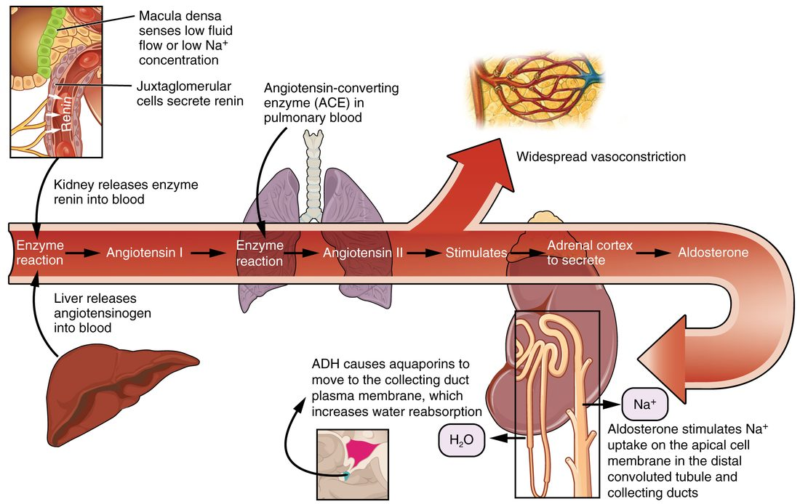

Long-term blood pressure regulation
1Why this matters
Ana, 34, hikes for six hours in desert heat and runs out of water halfway. By the end she has sweated about 3 liters. Her heart rate is 112, her blood pressure is 104/70, her mouth is dry, and when she finally reaches a restroom she passes only a small amount of dark urine. Her kidneys are already fighting to hold on to every bit of salt and water she has left.
2What this builds on
3Quick check before you start
1. Where is antidiuretic hormone (ADH) made, and where is it released into the blood?
- Made in the adrenal cortex, released from the adrenal medulla
- Made in the hypothalamus, released from the posterior pituitary
- Made in the kidneys, released from the kidneys
Show the answer
Neurons in the hypothalamus make ADH and carry it down their axons to the posterior pituitary, which releases it into the blood.
- Made in the adrenal cortex, released from the adrenal medulla:
- Correct: Made in the hypothalamus, released from the posterior pituitary:
- Made in the kidneys, released from the kidneys:
2. What does aldosterone do?
- Makes the kidneys reabsorb more sodium and secrete more potassium
- Makes the kidneys excrete more sodium and keep more potassium
- Raises blood glucose by breaking down glycogen
Show the answer
Aldosterone, from the adrenal cortex, makes kidney cells reabsorb sodium into the blood and secrete potassium into the urine. Water follows the sodium by osmosis.
- Correct: Makes the kidneys reabsorb more sodium and secrete more potassium:
- Makes the kidneys excrete more sodium and keep more potassium:
- Raises blood glucose by breaking down glycogen:
3. By MAP = CO × TPR, what happens to mean arterial pressure if cardiac output falls and TPR does not change?
- It rises
- It stays the same
- It falls
Show the answer
MAP is the product of cardiac output and total peripheral resistance. If cardiac output falls and TPR is unchanged, MAP falls in proportion.
- It rises:
- It stays the same:
- Correct: It falls:
4Anatomy

5How it works, step by step
- Ana sweats out more water than salt, and her blood volume falls.Venous return, stroke volume and MAP fall, and her plasma osmolarity rises.
- Lower pressure in the kidney's small arteries and more sympathetic stimulation reach the renin-making cells.The kidneys release more renin, which leads to more angiotensin II.
- Angiotensin II acts on arterioles, the adrenal cortex and the hypothalamus.Arterioles constrict, aldosterone rises, and ADH release and thirst increase.
- Aldosterone makes the kidneys keep sodium, and ADH makes them keep water.Her urine becomes small in volume and concentrated, and she loses less fluid.
- She drinks, and her kidneys keep the salt and water she takes in.Blood volume returns, so venous return, stroke volume and MAP recover, and the hormone signals switch off.
6Core concepts
7A common mistake
The wrong idea: Drinking more water is the main way your body raises its blood volume, and water alone restores it.
What actually happens: Plain water spreads through all your body fluids, inside cells as well as outside, so only a small part of it stays in the blood. What holds fluid in the blood and interstitial fluid is sodium. Your kidneys set blood volume mainly by how much sodium they keep, and water follows the sodium. That is why aldosterone and the RAAS, which act on sodium, have the largest effect on long-term volume, and why oral rehydration drinks contain salt.
8Check yourself
Anything you miss goes into your review queue.
1. Fluid outside your cells holds about 140 mmol of sodium per liter. A person eats a snack containing 2.9 g of sodium chloride (molar mass 58.5 g/mol). Roughly how much extra fluid will their body hold outside the cells until the kidneys excrete the sodium?
- About 0.05 L
- About 2.8 L
- About 0.07 L
- About 0.36 L
Show the answer
2.9 g ÷ 58.5 g/mol ≈ 0.05 mol, or 50 mmol of sodium. Thirst and ADH add water until that sodium sits at the normal 140 mmol/L. 50 ÷ 140 ≈ 0.36 L of extra fluid outside the cells.
- About 0.05 L: This is the amount of salt in moles, 0.05 mol, not a volume of fluid. The next step is to divide 50 mmol by 140 mmol/L.
- About 2.8 L: This divides 140 by 50 instead of 50 by 140. Holding 50 mmol at 140 mmol/L needs less than half a liter.
- About 0.07 L: This is about a fifth of 0.36 L, the part that ends up in the plasma, not the whole extra volume outside the cells.
- Correct: About 0.36 L: Correct. 50 mmol ÷ 140 mmol/L ≈ 0.36 L.
2. Ana hikes for six hours in desert heat without water and sweats about 3 L. Sweat has less salt than plasma. Predict each variable at the end of her hike, compared with before it.
| Variable | Change |
|---|---|
| Plasma osmolarity | — |
| ADH release | — |
| Renin release | — |
| Aldosterone | — |
| ANP release | — |
| Urine volume | — |
Show the answer
Water loss raises osmolarity and lowers volume. The nervous system, the kidneys, the adrenal cortex, the hypothalamus and the heart all respond: ADH, renin and aldosterone rise, ANP falls, and her kidneys make a small volume of concentrated urine while she waits for a drink.
- Plasma osmolarity: up. She lost more water than salt, so the solutes left in her plasma are more concentrated.
- ADH release: up. Hypothalamic osmoreceptors sense the higher osmolarity, and the fall in volume adds to the signal.
- Renin release: up. Lower pressure in the kidney's small arteries and more sympathetic stimulation both increase renin release.
- Aldosterone: up. More renin means more angiotensin II, which makes the adrenal cortex release aldosterone.
- ANP release: down. With less blood volume, venous return falls and the atria are stretched less.
- Urine volume: down. ADH makes the kidneys keep water, and aldosterone makes them keep sodium, which water follows.
3. A patient starts taking a drug that blocks angiotensin-converting enzyme. Which change is expected over the following days?
- Renin release from the kidneys falls sharply
- Angiotensin I in the plasma falls to near zero
- Aldosterone falls, and more sodium is excreted
- Plasma potassium falls below its normal range
Show the answer
With ACE blocked, less angiotensin II is made. Arterioles relax, and the adrenal cortex releases less aldosterone, so the kidneys keep less sodium and water. Blood volume and TPR both fall, which lowers pressure.
- Renin release from the kidneys falls sharply: Angiotensin II normally holds back renin release. With less angiotensin II and lower pressure, renin release rises.
- Angiotensin I in the plasma falls to near zero: Angiotensin I is made by renin, which still works. With the conversion step blocked, angiotensin I builds up.
- Correct: Aldosterone falls, and more sodium is excreted: Correct. Less angiotensin II means less aldosterone, so more sodium and water leave in the urine.
- Plasma potassium falls below its normal range: Aldosterone makes the kidneys secrete potassium. With less aldosterone, they secrete less, so plasma potassium tends to rise.
4. A man loses about 1.5 L of blood in a car crash. His plasma osmolarity is normal, yet his ADH level is many times higher than normal. What explains this?
- His osmoreceptors are reporting a hidden rise in osmolarity
- The large fall in volume and pressure drives ADH release
- Pain releases ADH, and pain is the main trigger after injury
- His kidneys release ADH when their blood flow falls
Show the answer
A fall in volume of more than about 5 to 10 percent reduces stretch of the arterial baroreceptors and of the stretch sensors in the atria and large veins. That drives ADH release steeply, to levels far above those osmolarity produces, and the volume signal overrides a normal osmolarity.
- His osmoreceptors are reporting a hidden rise in osmolarity: Losing whole blood removes plasma and its solutes together, so osmolarity stays normal. The osmoreceptors are not the source of this signal.
- Correct: The large fall in volume and pressure drives ADH release: Correct. A large volume loss is a powerful ADH trigger in its own right.
- Pain releases ADH, and pain is the main trigger after injury: Pain and stress can raise ADH somewhat, but the rise after a large bleed is driven mainly by the loss of volume.
- His kidneys release ADH when their blood flow falls: ADH comes from hypothalamic neurons and is released from the posterior pituitary. The kidneys are its target, not its source.
5. A healthy adult receives 2 L of IV saline, which has the same salt concentration as plasma, over two hours. Predict each variable over the following few hours, compared with before the infusion.
| Variable | Change |
|---|---|
| Atrial stretch | — |
| ANP release | — |
| Renin release | — |
| Aldosterone | — |
| Plasma osmolarity | — |
| Urine sodium excretion | — |
Show the answer
Adding fluid that matches plasma raises volume but not osmolarity. The atria sense the extra volume and release ANP, the RAAS switches down, and the kidneys excrete the extra sodium and water over the next hours.
- Atrial stretch: up. More blood volume raises venous return, which fills and stretches the atria more.
- ANP release: up. Stretched atrial muscle cells release ANP.
- Renin release: down. Higher pressure in the kidney's small arteries, less sympathetic stimulation and ANP all reduce renin release.
- Aldosterone: down. Less renin means less angiotensin II, and ANP also reduces aldosterone release directly.
- Plasma osmolarity: no change. Saline matches the concentration of plasma, so it adds volume without changing osmolarity.
- Urine sodium excretion: up. More ANP and less aldosterone make the kidneys keep less sodium, so more leaves in the urine with water.
6. A healthy adult loses about 1 L of blood, the bleeding is stopped, and they can drink freely afterward. Predict each variable, first in the minutes after the bleed and then over the next one to two days as the hormones act.
| Variable | Change |
|---|---|
| Mean arterial pressure, first minutes | — |
| Renin release, first hour | — |
| ADH, first hour | — |
| Urine volume, first day | — |
| Plasma volume two days later, compared with just after the bleed | — |
| Heart rate two days later, compared with the first hour | — |
Show the answer
Right after the bleed, pressure falls and the reflex speeds the heart. Over the next hours, renin, angiotensin II, aldosterone and ADH rise, urine output falls and thirst increases. Over one to two days, kept and drunk fluid restores plasma volume, so the fast reflex no longer has to work hard and heart rate settles.
- Mean arterial pressure, first minutes: down. Less volume means less venous return, stroke volume and cardiac output, so MAP falls before the reflexes fully catch up.
- Renin release, first hour: up. Lower pressure in the kidney's small arteries and sympathetic stimulation of the renin-making cells both increase renin.
- ADH, first hour: up. A loss of this size lowers stretch of the baroreceptors and the atrial sensors, which drives ADH release steeply.
- Urine volume, first day: down. Aldosterone keeps sodium and ADH keeps water, so less of both reaches the urine.
- Plasma volume two days later, compared with just after the bleed: up. Kept salt and water, plus thirst-driven drinking, refill the plasma.
- Heart rate two days later, compared with the first hour: down. With volume restored, venous return and stroke volume recover, baroreceptor firing returns, and sympathetic drive to the SA node eases.
7. Over several weeks, a person's blood volume stays about 10 percent above normal. Which hormone pattern would you expect?
- ANP high, renin high, aldosterone high
- ANP low, renin high, aldosterone high
- ANP high, renin low, aldosterone low
- ANP low, renin low, aldosterone low
Show the answer
Extra volume stretches the atria, so ANP rises. It also raises pressure in the kidney's small arteries, and ANP itself inhibits renin, so renin and angiotensin II fall, and aldosterone falls with them. Every signal pushes the kidneys to excrete sodium and water.
- ANP high, renin high, aldosterone high: Renin and aldosterone rise when volume is low. With extra volume and high ANP, both are turned down.
- ANP low, renin high, aldosterone high: This is the pattern for low volume. Extra volume raises ANP and lowers renin and aldosterone.
- Correct: ANP high, renin low, aldosterone low: Correct. High ANP with low renin and aldosterone is the response to too much volume.
- ANP low, renin low, aldosterone low: ANP is released by atrial stretch, which extra volume increases, so ANP would be high, not low.
9Summary
Over the long run, blood pressure follows blood volume, because more volume means more venous return, stroke volume and cardiac output. The kidneys set blood volume by how much sodium and water they excrete, and water follows sodium. Low pressure or volume makes the kidneys release renin, which leads to angiotensin II: it constricts arterioles, releases aldosterone so the kidneys keep sodium and water, and triggers ADH and thirst. ADH makes the kidneys keep water and, at high levels, constricts arterioles. ANP, released when the atria stretch, makes the kidneys excrete sodium and water and turns the other hormones down. Short-term reflexes act in seconds and reset; long-term control acts over hours to days and sets the level your pressure is held at.